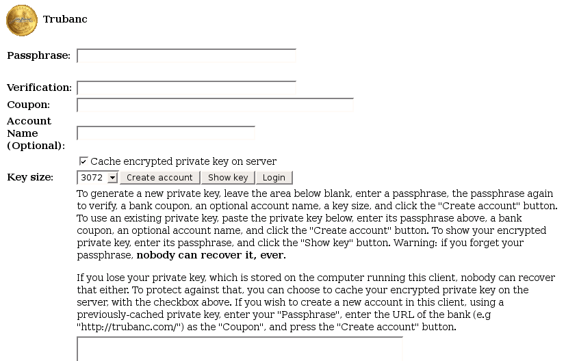
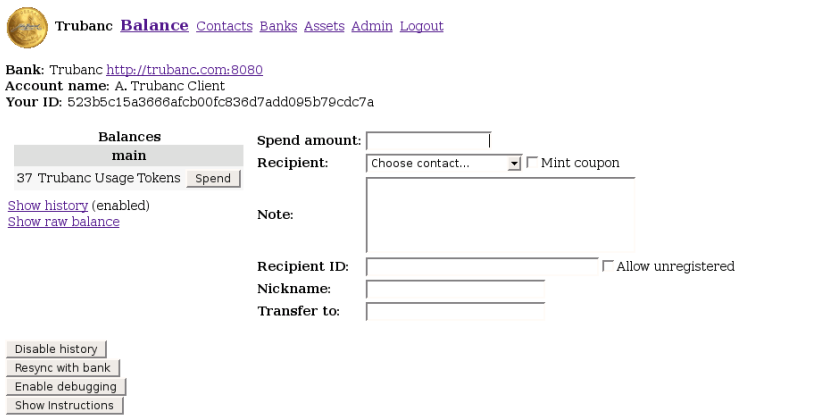
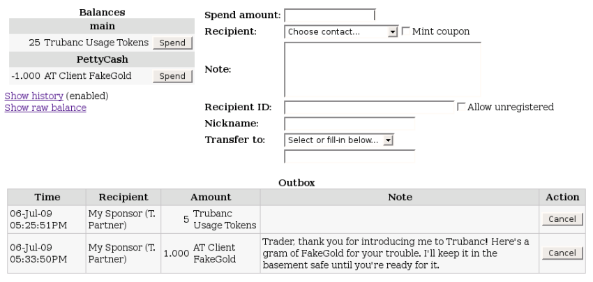
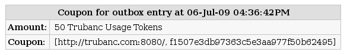
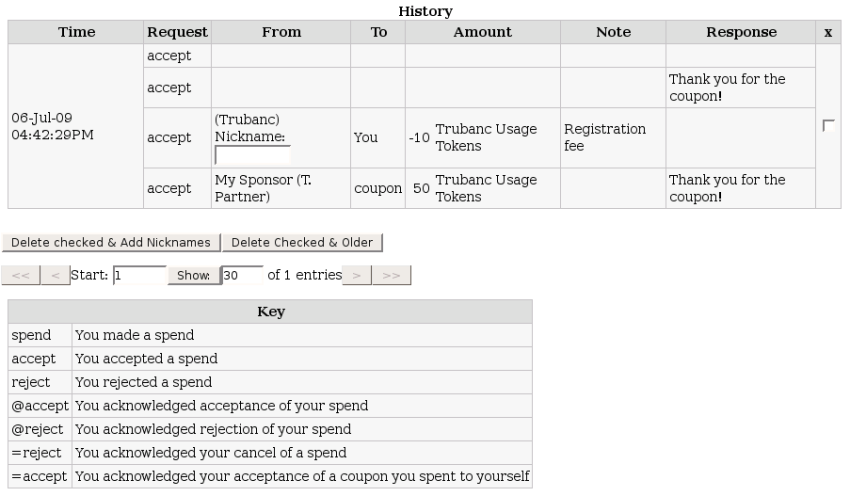
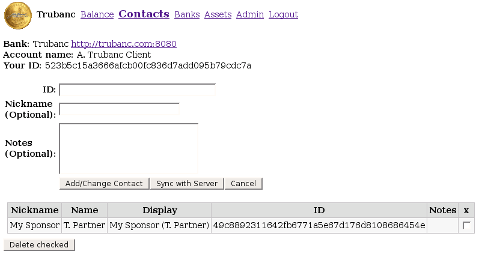
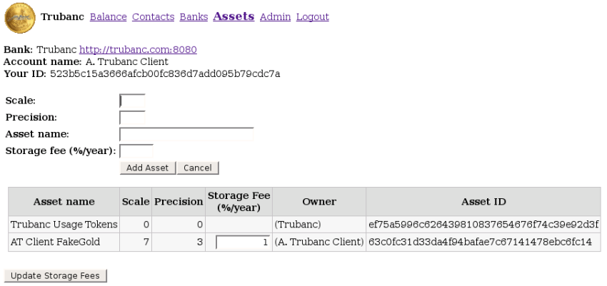

A Truledger Web Client
I have written a Truledger web client, mostly as an example of how to use the client API, but also as a useful tool for maintaining multiple Truledger accounts on multiple Truledger servers.
If you are interested in technical details of what goes on behind the scenes, Truledger in Plain English describes communication between the Truledger server and Truledger client.
Disclaimer: This site has a fully-functional Truledger client and server, but you wouldn't want to store any real money here. First, you enter your passphrase into the client unencrypted, so it's visible to anyone who can see your web traffic. You COULD install the client on your own computer and get rid of that problem, but the Truledger server on this machine is under development, so I may occasionally break things. I hope that one day soon there will be many real Truledger servers to choose from, hosted outside of the influence of the US government, and backed up daily to prevent data loss. For now, though, please use this site only to become accustomed to Truledger, and to help me test it.
NoteIf you just want to learn the Truledger web client by doing, follow the directions in the gray boxes titled "Summary".
Contents
InstallationLogin and Registration
- Registration
- Other Registration Screen Functions
Balance Screen
- Receiving Assets
- Balances
- Spending Assets
- Messaging
- Other Balance Screen Functions
Contacts Screen
Adding a Server
Assets Screen
- Issuing Assets
- Updating Storage Fees
Admin Screen
Installation
The latest version of the Truledger client is available for your operating system on the download page.
Windows
To use the Truledger client in Windows, you will need all three Windows files from the download page. The first file will install the C++ libraries from Microsoft. The second file will install OpenSSL_Lite, which Windows will use to create the required encryption keys. The third file is the actual Truledger client.
To install the C++ libraries, merely double-click the executable file and select "Run". After you accept the license agreement, the libraries will intall automatically.
To install OpenSSL_Lite, double-click the executable file and select "Run". You will be asked to accept the license agreement and specify the installation location. You can accept all the default options.
Create a "truledger" directory on your hard drive and unzip the Truledger client in that directory. To run the client, double-click the extracted file. The Truledger client will start a webserver in the terminal window and connect to it with your default web browser.
To stop the webserver, close your browser and the terminal window.
Linux
Download the latest Truledger client for linux and place it in a "truledger" directory of your home folder. From the terminal window, enter the truledger directory and unroll the tar ball.
cd truledger
tar -xvzf truledger-lx86cl.tar.gz
When you execute the included file, Truledger client will start a webserver and connect to it with your default web browser.
./truledger-lx86cl
You can stop the webserver using the "Shut down web server" button on the Admin screen, or by typing Ctrl-C in the terminal window where you started it.
Mac OS X
Same as Linux, but the archive is named truledger-dx86cl.tar.gz or
truledger-dx86cl64.tar.gz, and the executable is named
truledger-dx86cl or truledger-dx86cl64.
FreeBSD
Same as Linux, but the archive is named truledger-fx86cl.tar.gz or
truledger-fx86cl64.tar.gz, and the executable is named
truledger-fx86cl or truledger-fx86cl64.
Login and Registration
When you first start the Truledger client, you will see the Login screen. If you have previously created an account, simply enter your passphrase and click the "Login" button.
Passphrase
Your passphrase is your username and your password in one. The passphrase is used to decrypt an encrypted version of your PGP private key, which is stored on your disk. That private key is used to digitally sign all messages send to the server, guaranteeing that requests from you really are from you. You must remember your passphrase as it will not be retrievable by anyone. If you lose your passphrase, your account and all its assets will be lost forever (unless the server establishes some other way of identifying you, in which case they'll likely have an off-line recovery mechanism, but that would defeat the anonymous nature of Truledger).
If you prefer to use a random passphrase, the Loom Tools page has a random-word passphrase generator. Press the "Random" button in the "Passphrase" line.
Registration
To create an account, click the "Register a new account" link on the login screen to go to the Registration screen.
Enter your chosen passphrase twice. You must remember your passphrase, as it will not be retrievable if you forget it.
Truledger clients and servers are protected from spammers by a coupon system. To register your account with a Truledger server you will need to receive a unique Truledger coupon from a friend or the server proprietor. After you register, you will be able to "mint" coupons to fund new accounts for your friends.
The optional account name will be transmitted to other Truledger users when you interact with them. If you choose to use an account name, it should be descriptive, as in your name or your business name.
As part of the data security used by Truledger, the computer running the client caches an encrypted private key. Like your passphrase, if that private key is lost (hard drive crash, fire, etc.), your account will be lost. By default, Truledger caches a copy of the private key on the server, also, allowing you to recover your account. If you do not want Truledger to cache your private key on the Truledger server, you should uncheck the box marked "Cache encrypted private key on server" (not recommended).
RSA Labs estimates that an encryption key size of 3072 bits (the Truledger default) should be secure until beyond the year 2031. Smaller key sizes are minimally faster to generate and use, but at the expense of account security
Press the "Create account" button to generate the encryption keys and register your account with the Truledger server. Be patient as the keys are generated and the client is redirected to your new account balances page.
Summary - Registration- Get a Truledger coupon from a friend or the server proprietor.
- Choose a passphrase.
- Start the Truledger client.
- Click the "Register a new account" link to go to the registration screen.
- Enter your passphrase and verify it.
- Paste the Truledger coupon code.
- Press the "Create account" button.
Other Registration Screen Functions
To show your private key, enter your passphrase and press the "Show key" button.
If you would like to register a previously created account with this client, paste the account's private key in the large text box at the bottom of the screen and enter your passphrase and Truledger coupon.
To register an account with this client using a private key cached on a Truledger server, enter your passphrase and use the server's Truledger url as the coupon code.
Balance Screen
The Balance screen is where you view your Truledger account balances and send and receive assets.
At the top of the screen, in addition to the server name and your account name, is a field labled "Your ID". This is how other Truledger users identify your account when sending you assets.
Below that you will see your inbox. After registering an account with a new server, you will see at least two items in your inbox. One item will be the coupon you received from a friend or the server propietor giving you enough Truledger usage tokens to pay the registration fee. Another item will be a negative spend from the server to pay that registration fee.
In Truledger, no one can change your account balances without your signature, and a countersignature from the server. To authorize changes to your account balances, you must explicitly make or accept "spends".
Spends
Truledger spends are essentially digital notes, signed by you and countersigned by the server. Assets are moved between and within accounts by generating and accepting spends.
Receiving Assets
The "Inbox" section of the balance screen has six columns:
- Request: this is "Spend" for spends other people made to you, or "Accept" or "Reject" for acknowledgements of spends you made to others.
- From: This contains the name or ID of the other person. If you have given that person a nickname on the Contacts screen, that will appear. If that person also has an account name, that will appear in parentheses. If the other person is not amongst your contacts, a text box will allow you to add a nickname and save to your contacts.
- Amount: The amount that was spent in this transaction. If you see "(new)" after the asset name, that means that you have never credited any amounts of this asset type to your account. This can help you avoid accepting counterfeit assets (same name, but different ID).
- Note: The note in the original spend for this transaction. For acknowledgement lines, this is your original spend note.
- Action: the action you want to perform on this line when you press the "Process Inbox" button.
- Reply: you may type a reply here for spends, and you'll see the other person's reply here for acknowledgements of your spends.
"Notes" are passed between the Truledger client and server unencrypted. Do not include information in a note or reply that would compromise the security of your account.
To accept, reject, or ignore a spend, select what you want to do in each row's "Action" column.
To remove a spend acknowledgement from your inbox, closing the transaction, check the "Remove" box in its "Action" column.
Click the "Process Inbox" button to perform the selected "Action" to each row.
Summary - Receiving Assets- Go to the Balance screen.
- In the inbox "Action" column, select an action for each spend and unclick the "Remove" boxes for acknowledgements you wish to keep.
- Type a "Reply" for each accepted or rejected spend that needs one.
- Click the "Process Inbox" button.
Balances
The balances of all the assets you hold in your Truledger accounts and sub-accounts are shown in the balances section. Negative balances indicate that you are the issuer of that particular asset (see Issuing Assets). Zero balances are not shown.
The "Spend" buttons beside each asset will be used by you to indicate which asset to attach to spends you generate and coupons you mint.
Spending Assets
To make a spend, fill in the "Spend amount", choose a "Recipient" or enter a "Recipient ID", enter (optionally) a "Note", and click the "Spend" button next to the asset you wish to spend. Entering a "Nickname" will add the "Recipient ID" to your contacts list with that nickname, or change the nickname of the selected "Recipient".
"Notes" are passed between the Truledger client and server unencrypted. Do not include information in a note or reply that would compromise the security of your account.
Truledger allows you to create multiple sub-accounts for your assets. To create and transfer balances into sub-accounts, enter the "Spend Amount", select or fill-in the "Transfer to" name (letters and numbers only), and click the "Spend" button next to the asset you want to transfer from.
To mint a coupon, enter the "Spend Amount", check the "Mint coupon" box, and click the "Spend" button next to the asset you want to transfer to the coupon. You can redeem a coupon on the "Servers" page.
When you generate a spend or mint a coupon, an "Outbox" section appears, showing your pending transactions. The word "coupon" is a link to a page that shows that coupon, for easy copy and paste.
Spends that have not yet been accepted or rejected, and coupons that have not yet been redeemed, can be cancelled by pressing the "Cancel" button in that row of the "Outbox" section. Cancelled spends will come into your inbox just as if the recipient had rejected them, except the server will charge a transaction fee to discourage this as a regular practice. Cancelled coupons will come into your inbox as a regular spend, as if you had redeemed the coupon.
Summary - Spending Assets- Go to the Balance screen.
- Enter the "Spend amount".
- Choose a "Recipient" or paste in a "Recipient ID".
- Type a "Nickname" if you want to add or change it.
- Click the "Spend" button next to the asset you want to spend.
Truledger Usage Tokens
Truledger Usage Tokens are used to lease space on a Truledger server and to pay fees for server services. When you register a new account, the server will charge a registration fee, and one token for each file your account creates.
Each spend and coupon you generate creates two files on the server, one in your outbox and one in the recipient's inbox, so you are charged two Truledger Usage Tokens to lease server space. When the recipient accepts or rejects your spend, the file is deleted from that person's inbox and another file is generated in your inbox. When you process the acknowledgement in your inbox, both the file in your inbox and the file in your outbox are deleted, and the server returns two Truledger Usage Tokens to you.
Each sub-account you create creates one file on the Truledger server. This is a permanent file, so you cannot recover the one-token lease payment.
Through Truledger Usage Tokens, the server ensures that server capacity will be sufficient to service their customers' activities.
Messaging
If you generate a spend with a zero "Spend amount", the spend acts very much like an e-mail to the recipient. If the recipient accepts your zero spend, the Truledger server will refund the two usage tokens charged to generate the spend once the transaction is closed out.
If the recipient rejects your spend, however, the recipient will receive the two Truledger Usage Token refund. Therefore, while messaging through the Truledger server is essentially free, unsolicited messaging, or spamming, is an expensive proposition.
"Notes" are passed between the Truledger client and server unencrypted. Do not include information in a note or reply that would compromise the security of your account.
Other Balance Screen Functions
To view your account history, click the "Show history" link below the balances. You can enable or disable history logging in the client by pressing the "Disable history" button.
If you are a Truledger developer, you can view the raw balance information by clicking the "Show raw balance" link and view the client server communications with the "Enable debugging" button.
Contacts Screen
The Truledger server keeps track of customers by their ID, the SHA1 hash of their public encryption keys. Remembering 40-character hex strings tends to be hard for most humans, though, so the web client allows you to associate nicknames with your contacts. The Contacts screen shows you contacts that you have added in the past and allows you to add new ones.
To add a contact, or update an existing contact, paste in the contact's ID and a nickname and notes if desired. To remove a nickname or note from an existing contact, type a single space in that field. Press the "Add/Change Contact" button to update your contact list.
You can also add a contact from the "Inbox" section of the Balance screen or while generating a spend by filling in the "Nickname" box.
Pressing the "Sync with Server" button will update your contact list on both the server and the client. This can be helpful if you use multiple clients to access your Truledger account.
To delete a contact, check the box in the far right column of that contact's row, and press the "Delete checked" button.
Summary - Maintaining Contacts- Go to the Contacts screen.
- Paste in your contact's "ID".
- If you want, type a "Nickname".
- If you want, type some "Notes".
- Press the "Add/Change Contact" button.
- If the ID is new, a contact will be added. If it already exists, the Nickname and Notes of the existing contact will be updated. To remove a nickname or note, type a single space in that field.
Adding a Server
To create an account at a new server, or add an existing server account to a new client, use the Servers screen.
To create a new account, you must have a previously-minted coupon. Paste the coupon into "Server URL or Coupon". If you want the account to be named, enter an "Account name". Then press the "Add Server" button.
To redeem a coupon into an existing account, paste the coupon code into "Server URL or Coupon" and press the "Add Server" button.
To add an existing account at another server to a client, enter the URL of the server's Truledger server as the coupon. Then press the "Add Server" button.

- Acquire a coupon with usage tokens for the new server.
- Go to the Servers screen.
- Paste the coupon into "Server URL or Coupon".
- Enter an "Account Name", if you want to identify yourself with other than your ID.
- Press the "Add Server" button.
Assets Screen
Issuing Assets
Many Truledger servers will issue their own assets. Many of the existing digital gold currencies work that way. But, like Loom, Truledger allows anyone to issue a currency. If you convince enough people that your currency is stable and accepted by enough people, they'll use it. It costs two Truledger Usage Tokens to create a new asset type.
Creating a new asset type is very easy. On the Assets screen, you will see a a form that allows you to set the new asset's "Scale", "Precision", and "Asset Name", and "Storage fee". Then, press the "Add Asset" button.
Most GoldGram-like curencies use a scale of 7 and a precision of 3.
Scale: the number of digits to keep track of to the right of the decimal point. "Scale" must be greater than or equal to "Precision".
Precision: the minimum number of decimal places that will be printed, even if they're all zero.
Storage Fee: the fees expressed in %/year that you charge asset holders for holding and safeguarding the commodities backing the new asset.
When you create a new asset, it will appear in your "main" sub-account, with a balance of "-0". Negative balances are for assets you issue. You can spend as much of such an asset as you like, but people will trust your asset a lot better if you never spend more of it that you can back with the commodity you've choosen to back it.
You can move asset issuance to another sub-account, or transfer it to another person, by doing a spend for the entire negative amount. So, right after asset creation, when your balance is "-0.000" in your "main" sub-account, you can type "-0" as the "Spend amount" on the Balance screen, and select either a "Recipient" or a "Transfer to" sub-account. If you transfer issuance to another person, you'll likely want to inform your asset holders of the change. It could have an effect on the perceived value of your asset.
Storage fees should be set at a competitive rate (typically 1-5% per year). Storage fees are charged by the Truledger server when the assets are spent for the entire time the asset holder has held the asset. The recipient of an asset is charged for the storage fees of assets in his or her inbox.
Summary - Issuing Assets- Go to the Assets page.
- Enter a "Scale", "Precision", "Asset name", and "Storage Fee".
- Press the "Add Asset" button.
Assets Used and Updating Storage Fees
Below the add assets form is a list of all the assets you currently hold or have held in the past. The list includes the name, scale, precision, and storage fees for each asset, as well as the "owner" or asset issuer. The list also includes a unique Asset ID for each asset. This Asset ID is used throughout Truledger to identify a particular asset, to prevent counterfeiting.
If you are the issuer of an asset, a text box in the list will allow you to change the storage fees for that asset. Type the new storage fee into the text box and press the "Update Storage Fees" button.
Summary - Updating Storage Fees- Go to the Assets page.
- Enter the new storage fee in the assets list.
- Press the "Update Storage Fees" button.
Admin Screen
The admin screen is used by server propieters and Truledger server administrators. Server customers will not have to use this screen.
Thanks to Brock Lorber for extensively revising this page.
Copyright © 2008-2009 Bill St. Clair, All Rights Reserved